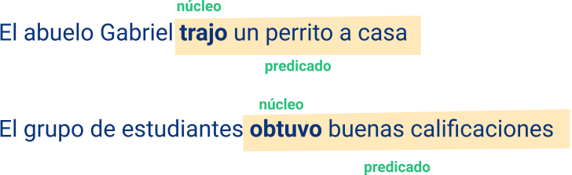

Introducción
El propósito de esta formación es poner en contacto al aprendiz con el estudio de la estructura de la gramática de la lengua española, para que tenga la posibilidad de clarificar dudas sobre el uso correcto del idioma y pueda desarrollar procesos de comunicación eficaces y efectivos en situaciones de orden social, personal y productivo.
Los temas se presentan de forma sencilla y los ejemplos propuestos lo familiarizan con el uso de la lengua en contextos comunicativos específicos como son el de la vida personal y laboral.
Se abordan las disciplinas que hacen parte de gramática a saber; la fonología, la fonética, la morfología, la sintaxis y la semántica, iniciando con los conceptos de lenguaje, lengua y habla; se presentan los sonidos de la lengua, continuando con el estudio de las clases de palabras y sus accidentes hasta llegar a la oración y al concepto de signo lingüístico.
1. Conceptos básicos
En el estudio relacionado con la gramática se tratan asuntos básicos sobre los sonidos y los fonemas del español. La morfología se ocupa de las clases de palabras de la lengua o categorías gramaticales:
Artículo, pronombre, sustantivo, adjetivo, verbo, adverbio preposición y conjunción.
La sintaxis analiza la forma de estructurar las oraciones y la función de las palabras dentro la misma.
1.1 Comunicación y lenguaje, lengua y habla
Para algunos autores, la comunicación se entiende como
Un proceso de intercambio de información. Entre los seres humanos se intercambian conocimientos, sentimientos u opiniones y estos son formas de comunicación.
Los animales emplean también sistemas de comunicación, por ejemplo, los delfines utilizan movimientos y ciertos sonidos para expresarse e igualmente lo hacen las hormigas en sus largas horas de trabajo y, las abejas para comunicar, posiblemente, el lugar en donde se encuentran las flores ricas en polen.
En general, los animales poseen maneras de comunicarse para manifestar afecto, miedo o agresión; pero hay diferencias entre la comunicación de los humanos y la de otras especies; los humanos utilizan sistemas muy complejos, construidos conscientemente, mientras que la comunicación animal es instintiva. Para los seres humanos la comunicación es fundamental porque a partir de ella se construye la vida en sociedad.
La comunicación se logra mediante el lenguaje, y el lenguaje es la capacidad que tienen los seres humanos para organizar diversas formas de comunicación; por lo tanto, existen muchas formas de lenguaje, por ejemplo, la música, la pintura, la danza, la mímica, los jeroglíficos de las antiguas culturas, entre otras, todas ellas son construcciones humanas (González el at., 2006).
La forma de lenguaje más importante es la lengua, que es exclusiva del ser humano, es social, es patrimonio de la comunidad lingüística, es un sistema de signos, es el mismo idioma. La lengua se materializa a través del habla, que se caracteriza por ser individual, particular; cada individuo habla de manera diferente a pesar de que la lengua es la misma.
Ahora bien, para que el proceso de comunicación sea posible se requieren seis elementos:
6
Elementos
del proceso de comunicación
Un hablante o emisor.
Un oyente o receptor.
Un código.
Un mensaje.
Un referente.
Un medio o canal físico.
Emisor o hablante
Es aquel que transmite un mensaje.
Receptor u oyente
Es el destinatario, es decir, el que recibe el mensaje emitido por el hablante y lo decodifica; quiere decir, que el receptor comprende el mensaje y lo interpreta.
Mensaje
Corresponde a la información que se quiere comunicar, lo que el hablante transmite.
Código
Es el sistema de signos a través del cual se prepara el mensaje; es la lengua o idioma; la lengua es un código.
Canal
Es el medio físico usado para transmitir el mensaje.
Referente
También conocido como el objeto, es aquello específico de lo que se habla en el mensaje.
Cuando estos seis elementos interactúan unos con otros se tiene un proceso de comunicación; este proceso comunicativo se representa de la siguiente manera:
Una vez que el receptor u oyente recibe el mensaje, lo comprende y lo interpreta, es decir, lo decodifica. Mediante el proceso de decodificación se capta el mensaje y se descifra el código usado por el emisor.
Esto comprende dos fases
Fase fisiológica, que consiste en la captación del mensaje (oral, escrito, etc.)
Fase psíquica, que es la comprensión del mensaje propiamente.
Si el mensaje enviado logra su objetivo, producirá un efecto en el receptor, un cambio en el pensamiento o en el comportamiento. La respuesta del receptor permite conocer el efecto causado por el mensaje; cuando hay información de retorno, esto es retroalimentación, se establece el circuito de la comunicación (como se muestra en la gráfica).
Volviendo a la lengua . . .
Es necesario señalar que es un sistema complejo de signos gobernado por un conjunto de normas, es producto de una convención social y es una herencia cultural; la lengua se adquiere de manera natural (lengua materna), permite al individuo entender y producir un número ilimitado de oraciones y mensajes, a partir de un pequeño número de signos y de reglas. Son ejemplos de lenguas el español, el inglés, el francés, el quechua, el chibcha; hay muchas lenguas en el mundo que el hablante conoce y usa para comunicarse.
En cuanto al habla . . .
Puede decirse que es una realidad concreta, ya que constituye la realización individual de la lengua. Una sociedad o grupo social conoce y emplea la misma lengua, el español para el caso; sin embargo, cada miembro de esa comunidad lingüística habla de manera diferente. Por lo tanto, la lengua tiene un carácter social, mientras que el habla es individual.
1.1.1 Lengua hablada y lengua escrita
Se desconoce el momento en que los seres humanos crearon las lenguas, pero se sabe con certeza que la lengua hablada antecede a la lengua escrita; todavía hay grupos humanos cuyas lenguas no se representan de manera escrita. La lengua se manifiesta en forma oral y escrita, son dos formas de comunicación importantes con características propias.
La lengua oral o hablada
Es aquella que empleamos en la conversación diaria con los demás miembros de la comunidad. Se adquiere en los primeros años de vida y se denomina ‘lengua materna’; hace uso de sonidos y su función comunicativa es inmediata; se trata de un lenguaje espontáneo, el hablante (emisor) puede modificar lo expresado y el oyente (receptor) tiene la posibilidad de captar el mensaje, en otras palabras, comprenderlo en el mismo momento de la emisión. La lengua hablada se caracteriza, también, por hacer uso de recursos como la entonación, las pausas y utilizar signos no verbales como gestos y movimientos.
La lengua escrita
Es aquella en la que representamos gráficamente los sonidos por medio de las letras y se vale de signos gráficos. Aprender a escribir exige instrucción y práctica, pues precisa el conocimiento y dominio de un sistema alfabético (conocer las grafías) y ortográfico. El mensaje que se comunica a través de la lengua escrita es autónomo y la comunicación que se establece entre el lector y el escritor es diferida, porque el receptor puede tardar largo tiempo para leer un texto o documento escrito. La humanidad ha dado gran valor a la lengua escrita porque contribuye a la difusión y preservación del conocimiento.
1.1.2. La gramática
Corrientemente se denomina gramática a los estudios realizados sobre la estructura y el funcionamiento de las lenguas.
La gramática estudia el sistema de cada lengua, es decir, se ocupa de la forma, función y significado de las palabras y de las reglas o normas para combinarlas, de hacer frases y oraciones para expresar las ideas.
Años atrás se consideraba la gramática como el arte de enseñar a leer y a escribir correctamente una lengua; modernamente se aborda como la parte de la Lingüística que se ocupa de las reglas que una lengua tiene para combinar las palabras y construir oraciones. En este sentido, la gramática es una disciplina científica de la que hace parte la fonética, la fonología, la morfología, la sintaxis y la semántica.

Consideramos la gramática como un medio de adquisición de habilidades que posibilitan la reflexión sobre el lenguaje, la adecuada producción de textos (acorde al nivel) y la comprensión lectora. A la hora de estudiar la gramática de nuestra lengua debemos tener en cuenta que no estamos frente a un producto acabado, sino en constante dinámica; lo cual nos invita a seguir descubriendo, discutiendo y optando por la descripción de la misma.
(Dabove et al., 2006, p. 3).
1.2 Elementos básicos de fonética: sonidos, fonemas, grafías
La fonología y la fonética son dos disciplinas científicas que estudian los sonidos de las lenguas.
La fonología
Estudia los sonidos lingüísticos como representaciones que permiten establecer diferencias de significado; se ocupa de analizar si el cambio de un sonido produce cambio de significado, como en el caso de las palabras lago, lego; caso, casa, beso, peso.
La fonética
Estudia los sonidos de la lengua como realizaciones físicas, esto es, se interesa por la producción de los sonidos y la percepción de los mismos, por la formación de las ondas sonoras. La fonética se ocupa de las posibles pronunciaciones que puede tener un sonido, por ejemplo, la /b/ en los vocablos boca y vaca.
Sonidos
Los sonidos lingüísticos son utilizados por los hablantes de una lengua para formar palabras. Se producen en los órganos de fonación del ser humano: labios, dientes, alveolos, lengua, paladar, úvula, cuerdas vocales. Convencionalmente, los sonidos se escriben entre corchetes [a], [b], [f]. Los sonidos son la realización acústica de los fonemas.
Fonemas
Son unidades mínimas de la lengua que producen cambio de significado, pero carecen de significado; se transcriben entre barras: /b/, /d/, /a/. Son unidades abstractas que los hablantes de la lengua reconocen, no obstante, las diferencias de pronunciación; son unidades de la lengua que el hablante usa para formar signos y distinguir unos signos de otros, por ejemplo, el fonema /a/ no tiene significado, pero sirve para formar el signo casa, sirve también para diferenciar el signo casa del signo caso.
Vocales
Son sonidos que se producen a partir de la salida libre del aire por la boca, sin obstrucción; son sonoras porque al articularse producen la vibración de las cuerdas vocales. Cada uno de los cinco sonidos vocálicos corresponde a los fonemas /a/, /e/, /i/, /o/, /u/; se distinguen por el grado de abertura de la boca y por la posición de la lengua.
Consonantes
Son sonidos que se producen con alguna obstrucción en la salida del aire por la boca.
La lengua española tiene veinticuatro fonemas, de los cuales diecinueve son fonemas consonánticos y cinco vocálicos.
Letras
b – ch – d – f – g – (goma) – gu (guitarra) / j – g (gente) / k – c – qu / l – m – n – ñ – p – r (lira) rr (rosa), (perro) / s – c (ce – ci) – z / t – y – x (boxeo).
Grafías o letras
son la representación gráfica de los sonidos o las letras del idioma en la escritura, por ejemplo, la letra p transcribe el fonema /p/; las grafías b y v transcribe el fonema /b/.
Las letras pueden ser mayúsculas o minúsculas.
Correspondencia entre fonemas y letras
Los fonemas como /a/, /p/, /m/ solamente se representan con una letra. El fonema /k/ que se representan con c en las sílabas ca, co, cu; qu en las sílabas que, qui; k en palabras como kepis y kilo. La h no es un fonema, es una letra muda.
Las letras dobles ch, ll, rr representan un solo fonema; gu (guitarra) representa un solo fonema. La v y la b tienen el mismo sonido, son dos letras con las que se representa el mismo fonema. La w aparece en nombres extranjeros.
El alfabeto es el conjunto de todas las letras, de los signos gráficos o grafías que sirven para transmitir cualquier comunicación; se llama alfabeto por las dos primeras letras griegas alfa y beta, y abecedario porque las primeras letras latinas son a, b, c, d.
La Real Academia Española decidió la desaparición en el alfabeto de las grafías ch y ll, no significa que los sonidos que representan no existan. En el diccionario las palabras que empiecen por ch y ll se incluyen en las secciones definidas para c y l.
1.3. Acentuación de palabras
Las palabras pueden estar compuestas por una o varias sílabas.
Una sílaba es la unidad mínima que se produce en una sola emisión de voz; en toda sílaba hay por lo menos una vocal, ejemplo:
La palabra termómetro está formada por 4 sílabas:
ter – mó – me – tro
La palabra pan está formada por una sílaba:
pan
La palabra hogar está formada por dos sílabas:
ho – gar
La palabra corazón está formada por:
3 Silabas
CO RA ZON
De acuerdo con el número de sílabas, las palabras pueden ser:
Monosílabas
Vocablos que están constituidas por una sílaba:
luz
sal
mar
pan
tú
can
sol
Bisílabas
Palabras constituidas por dos sílabas como:
can - to
ten - go
sa - po
ca - sa
lu - na
me - sa
Trisílabas
Palabras constituidas por tres sílabas:
ne - ve - ra
a - lum - nos
pro - fe - sor
a - mi - gos
can - cio - nes
co - ra - zón
Polisílabas
Formados por más de tres sílabas, por ejemplo:
al - ba - ha - ca
yer - ba - bue - na
sen - ti - mien - to
Todas las sílabas tienen un núcleo silábico que corresponde siempre a una vocal. Como se mencionó anteriormente las vocales a, e, o son fuertes; las vocales i, u son débiles. De acuerdo con esta idea, es necesario decir que el español tiene palabras en las cuales existe el encuentro de dos o tres vocales, entonces ocurre el diptongo y el triptongo:
Diptongo
Es la unión de dos vocales en una sílaba; en el diptongo una de las vocales es fuerte (abierta) y átona, es decir sin acento:
puer - ta
de - fi - ni - ción
ais - lar
hie - lo
lau - rel
Dos vocales débiles (cerradas) forman diptongo:
rui - do
rei - na
flui - do
Si se encuentran dos vocales fuertes (abiertas), el diptongo se deshace:
he - ro - e
fa - e - na
Triptongo
es la unión de tres vocales en una misma sílaba:
buey
carey
es - tu - diáis
El Acento
Es la mayor fuerza articulatoria con que se pronuncia una sílaba de una palabra; las sílabas pueden ser tónicas o átonas. Las sílabas tónicas tienen acento; las sílabas átonas carecen de acento; todas las palabras tienen una sílaba tónica.
Por ejemplo:
La palabra casa tiene dos sílabas, ca – sa; la primera sílaba, es la sílaba tónica; la segunda sílaba es la átona.
La palabra bodegón tiene tres sílabas, bo – de – gón; las dos primeras sílabas son átonas, la tercera sílaba es tónica, o como se muestra:
En la lengua española el acento puede ser ortográfico o prosódico.
El acento ortográfico se marca gráficamente como una tilde: canción, ángel, jardín. El acento prosódico se pronuncia, pero no se representa: luz, ventana, mesa.
Según la posición del acento, las palabras se clasifican como:
Agudas
Llevan el acento en la última sílaba (sílaba tónica). Solamente se marca el acento ortográfico en las palabras agudas terminadas en vocal, n, s.
ca - mi - nar
ve - ge - tal
a - mó
pa - red
a - trás
ca - fé
e - vo - lu - ción
co - rre - dor
Graves o llanas
Llevan en acento en la penúltima sílaba (sílaba tónica); llevan el acento ortográfico las palabras que no terminan en n, s o vocal.
án - gel
dé - bil
a - pa - si - ble
hi - jo
fér - til
ál - bum
o - bli - ga - do
na - ci - do
Esdrújulas
Llevan el acento en la antepenúltima sílaba (sílaba tónica); a estas palabras siempre se les marca el acento.
án - gu - lo
gra - má - ti - ca
es drú - ju - la
hi - dráu - li - ca
trían - gu - lo
ma - te - má - ti - ca
Sobresdrújulas
Llevan el acento en la trasantepenúltima sílaba (sílaba tónica):
a - ví - sa - me - lo
2. Elementos básicos de morfosintaxis
La morfosintaxis es la combinación de dos componentes de la gramática: la morfología y la sintaxis.
Morfología
Es una parte de la gramática que se ocupa de las clases de palabras de una lengua, cómo se forman y sus modificaciones. Una palabra es una unidad lingüística independiente con significado propio; en el lenguaje oral se separan por pausas y en el lenguaje escrito se separan con espacios en blanco.
Las palabras están compuestas por una parte invariable que se denomina raíz o radical y otra llamada desinencia o terminación; la raíz generalmente no cambia y contiene el significado básico de la palabra. La desinencia corresponde a la parte flexible, es decir, la parte variable de la palabra, por ejemplo:
Formación de las palabras
Las palabras pueden ser compuestas o derivadas. Un vocablo o palabra como sol no puede descomponerse en otras partes que tengan significación; se puede descomponer en fonemas /s/, /o/, / l /, pero la s, ni la o, ni la l significan nada.
La derivación es el procedimiento morfológico que permite agregar a la raíz de una palabra un sufijo (una terminación) para formar una nueva palabra; los procesos de derivación pueden producir cambios en las categorías de las palabras o en sus significados. Las palabras que se usan de base se denominan primitivas y las otras se llaman derivadas.
Terminación / ción
El sufijo o terminación ción se puede agregar a raíces de los verbos para formar sustantivos:
Son palabras derivadas porque provienen de los verbos introducir, retener, participar y explicar.
Terminación / mente
El sufijo mente se agrega a las raíces de los adjetivos para forma adverbios de modo:
Terminación / able
El sufijo able se agrega a las raíces de algunos verbos para formar adjetivos:
Estas palabras derivan los verbos lavar, recomendar, pensar.
La composición permite unir dos o más palabras para formar una nueva, llamada compuesta:
2.1 Clases de palabras y sus accidentes gramaticales
Todas las palabras de la lengua pueden organizarse en categorías o clases de palabras, de acuerdo con su estructura, la función que cumplen dentro de la oración y el significado que tienen. Son ocho las categorías gramaticales del español: artículo, sustantivo, adjetivo, pronombre, verbo, adverbio, preposición y conjunción. Se deja por fuera de esta lista la interjección, ya que no se considera como una categoría gramatical; algunas interjecciones incluyen distintos tipos de palabras que al usarse equivalen a oraciones, como:
¡ay!, ¡fuego!, ¡socorro!, ¡caramba!
A continuación, las categorías gramaticales o clases de palabras en español.
2.1.1. El artículo
Es la categoría gramatical que precede al nombre sustantivo para determinarlo. Se clasifican en artículos definidos (o determinados) e indefinidos (indeterminados).
| Articulos | |
|
Artículos definidos (determinados) |
El – la – lo – los – las |
|
Artículos indefinidos (indeterminados) |
Un – uno – una – unos – unas |
Los artículos definidos se refieren a cosas y objetos conocidos con anterioridad; se emplean para distinguir un objeto o cosa en particular o un conjunto genérico, como: los animales del campo son domésticos.
Los artículos indefinidos se refieren a cosas y objetos no conocidos por el hablante o el oyente, por ejemplo: una paloma volaba a gran velocidad.
2.1.2. El sustantivo
El sustantivo también llamado nombre
designa a todos los seres y entidades; es decir, a personas, animales o cosas, pueden ser abstractos, concretos o imaginarios:
Mujer.
Idea.
Tigre.
Objetos.
Los sustantivos son palabras variables o flexibles
Porque presentan distintas desinencias para los accidentes gramaticales de género y número. La función principal del sustantivo es ser núcleo del sujeto y núcleo del predicado nominal.
Accidentes gramaticales del sustantivo
Género
en el español los sustantivos pueden ser masculinos o femeninos (género gramatical); cuando se refieren a personas, macho o hembra; si se refieren a animales (género natural). Las palabras que nombran objetos o cosas también tienen género masculino o femenino; la distinción de género se realiza generalmente mediante la utilización de las terminaciones o desinencias, -o para masculino y -a para femenino, hay, sin embargo, algunas excepciones.
Los sustantivos femeninos se forman generalmente agregando la desinencia -a
Pintor - Pintora.
Secretario - Secretaria.
Leon - Leona.
Panadero - Panadera.
Gato - Gata.
Oso - Osa.
Número
Los sustantivos pueden estar en singular o en plural; el singular se refiere a una sola cosa, a un solo animal, a una sola persona: una casa, un hombre, el problema; todos ellos son sustantivos singulares. El plural sugiere la existencia de varias cosas, objetos o personas; generalmente el plural se forma con las desinencias s, es.
Calle - Calles.
Estudiante - Estudiantes.
Palo - Palos.
Patio - Patios.
Comedor - Comedores.
Café - Cafés.
Pie - Pies.
Ley - Leyes.
Buey - Bueyes.
Rubí - Rubíes.
Tabú - Tabúes.
Alhelí - Alhelíes.
Aumentativos, diminutivos y despectivos
Los sustantivos pueden indicar aumento, disminución o desprecio en su significado, efecto que se logra con el uso de las desinencias que corresponda.
Aumentativos
Las desinencias para la producción de aumentativos son: on, ona, azo, aza, ote, ota:
Hombrón.
Casona.
Perrazo.
Grandote.
Cucharota.
Diminutivos
las desinencias más comunes para la generación diminutivos son: -ito, -ita, -illo, -illa, -ico, -ica, -in, -cito, -cita. Ejemplo:
Dibujito.
Niñita.
Florecilla.
Camioncito.
Mujercita.
Revise en la siguiente tabla la clasificación de los sustantivos.
| Clasificación de los sustantivos | ||
|
Sustantivos |
Sentido |
Ejemplos |
|
Propios y comunes |
Los sustantivos propios mencionan el nombre particular de personas, países, ciudades, etc. Se escriben con mayúscula. |
Colombia, Amazonas, Carlos, María, Marte. |
|
Los sustantivos comunes hacen mención a seres, cosas u objetos genéricos. |
nevera, mesa, sofá, gato, animal, mercado, luz, agua. |
|
|
Concretos y abstractos |
Los sustantivos concretos designan a identidades reales o imaginarios que pueden verse o representarse. |
barco, polvo, cemento, manzana, escuela. |
|
Los sustantivos abstractos se refieren a seres, objetos, ideas, conceptos, fenómenos. |
inteligencia, amor, bondad, optimismo, blancura. |
|
|
Colectivos |
Designan un grupo o conjunto de seres de la misma especie. |
rebaño, bosque, manada, cardumen. |
|
Simples |
Formados por una sola palabra, sin desinencia. |
vino, azúcar, dátil, pan. |
|
Derivados |
Se forman a partir de un radical y una o más desinencias. |
vinatero, azúcar, datilero, panadero. |
|
Compuestos |
Son los sustantivos que se forman con dos o más palabras. |
mediodía, bienestar. |
Una forma de crear nuevas palabras es a partir de la derivación. Los sustantivos derivados se construyen adicionando sufijos y prefijos; los sufijos son las desinencias que se agregan al final de las palabras sin que se altere el significado de las mismas; los prefijos son las partículas que se agregan al comienzo de las palabras que pueden cambiar el significado básico de estas, por ejemplo, los prefijos pre, epi, peri, sub; en español hay gran cantidad de prefijos de origen griego y latino:
2.1.3 El adjetivo
Es otra categoría gramatical o clase de palabra; es el vocablo que acompaña al sustantivo para calificarlo o determinarlo; expresa las propiedades o características del sustantivo:
Accidentes gramaticales del adjetivo:
| Clasificación de los adjetivos | |||
|
Clases |
Sentido |
Función |
Ejemplos |
|
Calificativos |
Agregan una cualidad al nombre. |
de color. |
lila, blanco, morado, negro. |
|
derivados de verbos. |
amado, leído, roto, dormido. |
||
|
derivados de sustantivos. |
salado, escolar, mental. |
||
|
gentilicios. |
colombiano, canadiense, tolimense. |
||
|
Determinativos |
No tienen un significado completo; limitan o precisan al sustantivo al que acompañan. |
adjetivos demostrativos. |
este, esta, ese, esa, aquel, aquella, estos, estas, esos, esas, aquellas, aquellos. |
|
adjetivos posesivos. |
mi, tu, su, mis, tus, sus, mío, mía, tuyo, tuya, suyo, suya, nuestro, nuestra, vuestra, vuestro (y los plurales) |
||
|
adjetivos indefinidos. |
otra, otro, todo, toda, todos, todas, semejante, diferente, diverso(a), varios, mismas, tanta, cualquier, algo, algunos, ninguno, poco, demasiado (singulares, plurales, masculino o femenino). |
||
|
adjetivos numerales |
cardinales: diez, cinco, cien, mil, quince. |
||
|
ordinales: primero, segundo, sexto. |
|||
|
múltiplos: doble, triple, séxtuple. |
|||
|
adjetivos interrogativos. |
cuál, cuáles, qué, cuánto, cuánta, cuántos, cuántas. |
||
2.1.4 Pronombre
Es la categoría gramatical o clase de palabra que se emplea para reemplazar al sustantivo y evitar, en algunos casos la repetición: Elena trabaja en un banco; ella estudia en la universidad en las noches.
Pronombres personales
Se refieren a las personas gramaticales que participan en el diálogo:
Primera persona: yo, mí, me, conmigo (singular) – nosotros, nosotras, nos (plural).
Segunda persona: tú, usted, ti, te, contigo (singular) – ustedes, vosotros, vosotras, os (plural).
Tercera persona: él, ella, ello, sí, se, consigo, lo, la (singular) – ellos, ellas, las, les, sí, se (plural).
Pronombres demostrativos
Señalan seres, objetos y cosas sin nombrarlos; su significado lo determina el contexto y concuerdan en género y número con su antecedente:
Masculino: éste, ése, aquél (singular) – éstos, ésos, aquéllos.
Femenino: ésta, ésa, aquélla (singular) – éstas, ésas, aquéllas (plural).
Neutro: esto, eso, aquello.
Pronombres posesivos
Se refieren a cosas, objetos, seres que son posesión de alguien; se relacionan con las tres personas gramaticales, concuerdan en género y número con el antecedente:
Primera persona: mío, mía, nuestro, nuestra – míos, mías – nuestros, nuestras.
Segunda persona: tuyo, tuya, vuestro, vuestra – tuyos, tuyas, vuestros, vuestras.
Tercera persona: suyo, suya – suyos, suyas.
Pronombres relativos
Se refieren a alguien o algo que se ha mencionado o que ya es conocido por los hablantes; son: que, quien, cual, cuanto, cuanta – quienes, cuales, cuantos, cuantas:
Tomé el dinero que me prestaste.
Quienes compraron los libros ya los leyeron.
Pronombres interrogativos
Designan objetos, cosas o seres cuya identidad es desconocida; se distinguen porque están en el lugar de un sustantivo (nombre) por el que se preguntan; se usan en oraciones interrogativas y exclamativas y siempre llevan acento: qué, quién, quiénes – cuál, cuáles – cuántos, cuánta, cuántas:
¿Qué me trajeron de regalo?
¿Quiénes dañaron la pared?
¿Cuál compraste?
¿Cuántos perdieron la apuesta?
Pronombres indefinidos
Se refieren a cosas o seres cuya cantidad o identidad es imprecisa, se usan en singular y en plural: algo, alguien, nadie, nada, cualquiera, alguno, algunos, alguna, algunas, ninguna, todo, mucho, varios, demasiado, demasiada, bastante:
Alguien me contó la verdad de lo ocurrido.
No quiero quejarme de nadie.
Algo me dice que no estás contenta.
2.1.5 El verbo
Es la categoría gramatical que expresa acciones, movimientos de los seres o las cosas; el verbo se considera como una acción. Los verbos también expresan estados o situaciones en que las personas, los animales o las cosas se encuentran; los cambios que padecen los objetos y las manifestaciones de los fenómenos de la naturaleza.
El verbo es la palabra que más accidentes gramaticales tiene;
Los accidentes del verbo son:
La conjugación española:
Conjugar un verbo es presentarlo en sus variaciones como:
yo leo
tú lees
él (ella) lee
nosotros(as) leemos
ellos(as) leen
En el primer grupo están los verbos terminados en -ar
Amar
En el segundo grupo, los terminados en -er
Comer
Y en el tercero, los terminados en -ir
Dormir
Conjugación española
Clasificación de los verbos
existen muchas clases de verbos; a continuación de presentan algunas.
A
Por su flexión o conjugación
Regulares
Son los verbos que al conjugarse mantienen su raíz y siguen las desinencias del grupo al que pertenecen: primer grupo (ar): hablar; segundo grupo (er): ver; tercer grupo (ir): partir.
Irregulares
Aquellos que al conjugarse presentan cambios en su raíz o en su desinencia; es decir, no mantienen la conjugación del grupo al que pertenecen por su desinencia de infinitivo: andar, tener, morir.
Los verbos ser e ir tienen varias raíces y, por lo tanto, formas muy diversas; son muy irregulares:
Ser: soy, seré, era, fui / eres, serás, eras, fuiste.
Ir: voy, iré, iba, fui / vas, irás, ibas, fuiste.
Leer: leo, leeré, leí, leía / lees, leerás, leíste, leías.
Dormir: duermo, dormiré, dormí, dormía / duermes, dormirás, dormiste, dormías.
Impersonales
Son los verbos que solamente se conjugan en la tercera persona de singular, en todos los tiempos: llover, anochecer, tronar, nevar, relampaguear.
B
Por su significado
Transitivos
Son los verbos que exigen la presencia de un agente (complemento directo) que realiza la acción y un paciente que la recibe. Son verbos intransitivos: querer, oír, abrir, lavar, llevar, entregar, decir, entre muchos otros:
Compraremos el pan del desayuno en la panadería.
En este caso el agente es nosotros y el paciente el pan.
Las niñas lavaron su ropa en el río.
El agente corresponde a las niñas y el paciente a su ropa.
Intransitivos
Los verbos intransitivos solo exigen la presencia de un agente, que es el que realiza la acción del verbo, no tienen complemento directo, pero admiten otros complementos. Verbos como correr, nacer, volar, estudiar, dormir, vivir, leer, escribir, son intransitivos:
Viajan los fines de semana.
Estudiamos en la escuela en horas de la mañana.
Trabajaron hasta jubilarse.
Ese camino conduce al mar.
Mi sobrino nació en la mañana.
Copulativos
se usan para unir el sujeto y el predicado de las oraciones; los principales verbos copulativos del español son ser y estar:
Tu inteligencia es admirable.
Su esposa está preocupada por la tardanza.
Hoy estás bellísima, como siempre.
Eres una gran amiga.
Reflexivos
los verbos reflexivos expresan una acción que se realiza sobre el sujeto; exigen la presencia de los pronombres me, te, se, nos, os:
Me peino todas las mañas.
El niño ya se baña y se cepilla los dientes.
Esa señora se enoja por todo.
C
Por su estructura
Primitivos
Los verbos que no se derivan de otra palabra: cantar, lavar, romper, crecer, mirar.
Derivados
Los verbos que proceden de otro vocablo: contradecir, menospreciar, contraponer.
Prepositivos
los verbos que demandan la presencia de una preposición para expresar una idea completa:
A pesar de las circunstancias, renunciamos a la herencia.
El documento abundaba en extranjerismos.
Prescindió de todos los lujos.
2.1.6 El adverbio
Es la categoría gramatical que modifica al adjetivo, al verbo y al mismo adverbio:
Mi familia vive muy lejos.
La tarea está bien hecha.
La abuela camina lentamente.
Los estudiantes están bastante agradecidos.
Su función más importante es modificar verbos para denotar tiempo, modo, lugar.
Vivimos aquí hace varios años.
El perro ladraba amenazadoramente.
Nunca nos informaron lo sucedido.
Existen las frases o locuciones adverbiales:
Sin ton ni son.
A la buena de Dios.
A sabiendas.
Cara a cara.
De vez en cuando.
A regañadientes.
Clasificación de los adverbios
Calificativos
Figuran en este grupo los adverbios derivados de adjetivos; usan las mismas formas adjetivas con función adverbial, entre ellos figuran: mal, peor, mejor, bajo.
Los adverbios que no denotan modo son: primeramente, posteriormente, últimamente, previamente, anteriormente, últimamente.
Determinativos
Se agrupan en adverbios de lugar, tiempo, modo, cantidad, duda, afirmación, negación:
Lugar:
Indican el sitio donde se realiza la acción del verbo: aquí, allí, ahí, acá, allá, cerca, lejos, fuera, afuera, dentro, adentro, encima, debajo, arriba, abajo, delante, adelante, alrededor, detrás, dondequiera.
Tiempo:
Señalan el momento en que se realiza la acción del verbo: mientras, luego, temprano, antes, después, pronto, tarde, ya, ahora, entonces, hoy, mañana, ayer, nunca, jamás, siempre, todavía.
Modo:
Se refieren a la manera como se realiza la acción del verbo: así, apenas, cómo, como; y varias locuciones adverbiales de modo: como si nada, a tientas y a locas, cara a cara, de prisa, sin ton ni son.
Cantidad:
señalan la cantidad de la acción realizada; muchos de ellos son intensificadores: demasiado, más, mucho, poco, menos, bastante, tanto, casi, nada, cuánto, cuanto, muy.
Duda:
Indican la posibilidad o el deseo acerca de algo: quizá, tal vez, acaso.
Afirmación:
Se usan para aseverar o confirmar la acción del verbo: sí, ciertamente, también.
Negación:
Se usan para negar: no, tampoco.
2.1.7 La preposición
Son palabras invariables que se utilizan para relacionar vocablos y se usan para subordinar. Las preposiciones simples son:
a
con
desde
hacia
por
so
ante
contra
de
hasta
según
sobre
bajo
entre
para
sin
tras
Nota: la preposición so se utiliza en la expresión “so pretexto de”.
Nota: la preposición so se utiliza en la expresión “so pretexto de”.
Existen frases proposicionales de uso muy frecuente; su función es lo que se enuncia:
Adverbio y preposición:
Antes de, después de, lejos de, junto a, encima de, delante de.
Preposición, sustantivo y preposición:
Con arreglo a, en virtud de, con base en, de acuerdo con.
2.1.8 La conjunción
Son partículas invariables que se utilizan para relacionar palabras y oraciones; carecen de significado propio, pues tienen un valor relacionante por ser nexos.
Existen dos tipos de conjunciones:
Las conjunciones propias
Son las formadas por una sola palabra; y, ni, si, pero, o, mas, pues, sino.
Las conjunciones impropias
Están formadas por dos o más palabras: sin embargo, no obstante, así que, porque, aunque, por consiguiente, a pesar de que, por lo tanto, con el fin de que, siempre que, por más que, ya que.
Clasificación de las conjunciones
Coordinan dos o más palabras que desempeñan una misma función y unen oraciones. Las conjunciones copulativas son: y, e, ni.
Son conjunciones coordinantes cuya función es enlazar palabras para expresar posibilidades alternativas, distintas o contradictorias; las conjunciones disyuntivas son o, u.
Son coordinantes enlazan términos que expresan opciones posibles: ya…ya; bien…bien; ora…ora; sea…sea; fuera…fuera.
Son conjunciones coordinantes que indican oposición o contrariedad entre los elementos que enlazan; las conjunciones adversativas son: pero, mas, sino, sin embargo, no obstante, antes bien, con todo, más bien, fuera de, excepto, salvo, menos, más que, antes, que no.
Siempre subordinan una oración a otra; la conjunción completiva más usual es que.
Estas conjunciones siempre subordinan una oración a otra; expresan la causa o el motivo de la acción verbal; son: porque, pues, ya que, puesto que, pues que, supuesto que, que, de que, como, por razón de que, en vista de que, dado que, por cuanto, a causa de que, por lo cual.
Expresan la consecuencia de una acción: luego, así pues, conque, así que, por consiguiente, por tanto, por lo tanto, pues, de manera que, de modo que, que.
Introducen la oración subordinada que expresa la condición para que se cumpla lo señalado en la oración principal. Las conjunciones condicionales son: si, como, en caso de que, siempre que, con tal de que.
Introducen una oración subordinada que expresa la finalidad o el propósito de realizar la acción del verbo: para que, a fin de que, con el objeto de que, con el fin de que.
Introducen oraciones subordinadas que indican la dificultad para cumplir lo expresado en la oración principal. Las conjunciones concesivas son: aunque, por más que, si bien, aun cuando, a pesar de que, así, como, siquiera, ya que, bien que, mal que.
2.2 La oración: concepto y elementos
La sintaxis es la parte de la gramática que estudia la manera como las palabras se ordenan en las oraciones, cómo se coordinan y cómo se subordinan, de igual manera, estudia las relaciones de las palabras y las funciones que tiene dentro de la oración.
La oración es la menor unidad del habla con sentido completo y lógico e independencia gramatical.
Esto quiere decir que encierra un pensamiento completo y claro. Está constituida por dos grupos o frases fundamentales, el sujeto y el predicado; el sujeto es de quien se habla en la oración y quien realiza la acción del verbo; el predicado es lo que se dice o predica del sujeto.
La estructura de la oración “los osos buscan alimento” se puede representar de esta manera:
Frase
Son expresiones que no constituyen una oración porque carecen del verbo; por lo tanto, no tienen sentido completo:
Una mañana de frío invierno.
Por si acaso.
Algunas veces.
La camisa blanca de mi tío.
El currulao de mi tierra.
Elementos de la oración
Una oración está constituida por dos elementos, el sujeto y el predicado; una oración expresa una idea o un pensamiento completo y tiene un verbo conjugado.
El sujeto (FN)
El sujeto o Frase Nominal (FN) es la palabra o frase que hace referencia a una idea, un concepto, un animal, un objeto o una persona, de los cuales se expresa o se dice algo. El sujeto es de quien se habla en la oración y quien realiza la acción del verbo. Se puede identificar con las preguntas ¿qué o quién realiza la acción? ¿de qué o de quién se habla?
El sujeto puede encontrarse al principio, en medio o al final de la oración y en muchas ocasiones puede omitirse, se reconoce por la desinencia del verbo y se denomina sujeto tácito.
Núcleo del sujeto
Todos los sujetos tienen un núcleo que es la palabra más importante, puede estar acompañado de modificadores. El sustantivo es la palabra más importante del sujeto, por lo tanto, es el núcleo; concuerda en género y número con el verbo; también es posible que una oración tenga dos o más núcleos.
El artículo y el adjetivo son los modificadores directos del sujeto; en las oraciones anteriores los núcleos de los sujetos son tardes, libro, equipo; los modificadores son las, mi, el.
El predicado (FV)
El predicado o Frase Verbal (FV) es la parte de la oración que expresa la acción que realiza el sujeto; el predicado es todo lo que se dice del sujeto, está conformado por un verbo y sus complementos.
Núcleo del predicado
El núcleo del predicado es el verbo, que es la palabra más importante y que concuerda en género y número con el núcleo del sujeto.
Predicado nominal y predicado verbal
El predicado verbal
Tiene como núcleo un verbo con significado pleno; esto quiere decir que el verbo por sí mismo da la información.
El predicado nominal
Se construye con los verbos copulativos ser y estar, que no tienen un significado pleno y se acompañan de un adjetivo, un sustantivo o una oración; el verbo solamente cumple la función de enlazar el sujeto con el predicado; en estos casos, el núcleo del predicado es un nombre adjetivo.
Complementos del núcleo del predicado
Los complementos del verbo u objetos son: objeto o complemento directo, objeto o complemento indirecto, objeto o complemento circunstancial, entre otros.
Complemento u objeto directo
Se refiere a la persona, animal o cosa que recibe directamente la acción del verbo.
Complemento u objeto indirecto
Se refiere a la persona, animal o cosa que recibe indirectamente la acción del verbo.
Complemento u objeto circunstancial
Indican el lugar, el modo, el tiempo, instrumento, compañía, causa. La función del complemento circunstancial depende del adverbio o de una frase preposicional.
2.3 Clases de oraciones
Las oraciones en español se clasifican en simples y compuestas.
Las oraciones simples
Son aquellas que tienen un solo verbo conjugado:
El soldado vigila el campamento durante la noche.
Los animales huyeron rápidamente del fuego.
Las niñas juegan en el parque los domingos.
Voy a visitar a mi familia.
Las oraciones se han clasificado de acuerdo con dos criterios. El primero, desde el punto de vista de la actitud del hablante, en ese sentido, las oraciones son enunciativas, interrogativas, exclamativas, imperativas, desiderativas, dubitativas. El segundo criterio depende del verbo principal de la oración: copulativas, transitivas, intransitivas, reflexivas, recíprocas, pasivas e impersonales.
A
Oraciones de acuerdo con la actitud del hablante
Enunciativas: llamadas también declarativas o aseverativas porque el hablante enuncia una opinión, un juicio o una idea; informan sobre un hecho, pueden ser afirmativas o negativas:
Gabriel García Márquez escribió “Cien años de soledad”.
No vine a clase ayer porque estaba enfermo.
Interrogativas: formulan una pregunta sobre algo que el hablante desconoce. En la comunicación oral, una pregunta se identifica por la entonación; en la lengua escrita se representa mediante los signos de interrogación; en español los signos de interrogación son dobles ¿-?:
¿Viniste ayer a clase?
¿Recibieron el mensaje?
Exclamativas: expresan la emoción del hablante, que puede ser de sorpresa, de dolor, de miedo, de alegría, de ira. En el lenguaje oral se reconocen por la entonación y en el lenguaje escrito por los signos de exclamación, que en español son dobles ¡-!:
¡Uy, qué susto!
¡Llueve a cántaros!
Imperativas: se llaman también exhortativas o mandatos; indican una petición, un orden, una súplica o un ruego:
Papi, regálame para comprar un dulce.
No fumes en este salón.
Desiderativas: mediante las oraciones desiderativas el hablante expresa el deseo de que suceda algo; generalmente se construyen con el verbo en modo subjuntivo:
Ojalá haga buen sol mañana.
Que tengas un feliz cumpleaños.
Dubitativas: expresan una duda o un estado de incertidumbre que tiene el hablante:
Quien sabe si lloverá esta noche.
No sabemos si llegaremos temprano a casa.
B
Oraciones según el tipo de verbo
Copulativas: son las oraciones que tienen como verbo principal ser y estar:
Ella es la doctora.
Algunas situaciones son difíciles.
Su hija estaba muy triste.
Transitivas: aquellas oraciones que llevan un verbo transitivo:
Mis amigos toman tinto muy caliente.
Luisa pintaba paisajes cuando era joven.
Intransitivas: se construyen con verbos intransitivos:
Juan Carlos suspiró tres veces.
Los muchachos nadan muy bien.
Reflexivas: son las oraciones que llevan un verbo reflexivo:
Se maquillaba y se arreglaba muy temprano en las mañanas.
Nosotros nos miramos en el espejo con asombro.
Pasivas: oraciones que se construyen con el verbo en forma pasiva:
Los premios fueron entregados a los autores.
El dinero perdido es devuelto por las autoridades.
Impersonales: estas oraciones tienen un verbo impersonal:
Se lucha por la libertad.
Nevó toda la noche.
Las oraciones compuestas
Son las que tienen más de dos verbos conjugados, es decir, están conformadas por dos o más oraciones:
Es necesario visitar al odontólogo dos veces al año.
Tardaste en llegar.
Las oraciones compuestas pueden ser coordinadas, subordinadas y yuxtapuestas.
A
Oraciones coordinadas
Son las oraciones unidas por una conjunción; cada una de las oraciones coordinadas tiene sentido completo sin depender de las otras.
Con base en la conjunción que establece el nexo entre las oraciones se clasifican en:
Coordinadas copulativas las que tienen como enlace una conjunción copulativa (y) que indica adición.
Mi madre preparó una cena deliciosa y todos comimos juntos.
Coordinadas adversativas expresan una contrariedad, su enlace se hace con las conjunciones: pero, no obstante, sin embargo, mas, sino que con todo, antes, antes bien.
La llamó pero no la encontró.
Coordinadas disyuntivas en las cuales una oración excluye a la otra, es decir, una de las oraciones presenta una alternativa (conjunciones o, u).
Se toman toda la sopa o no les doy el postre.
Coordinadas distributivas expresan dos o más acciones alternativas; la coordinación se hace a partir de expresiones que funcionan como conjunciones: ora…ora, éste…aquél, unos…otros, ya…ya, bien…bien, sea…sea.
Ora reían, ora lloraban.
Unos cantaban, otros bailaban.
B
Oraciones subordinadas
Las oraciones subordinadas hacen parte de otra oración, en la cual desempeñan una función específica; son parte de una oración principal, por lo tanto, no tienen independencia sintáctica ni semántica.
En las oraciones compuestas subordinadas hay partículas subordinativas que establecen la relación entre las dos oraciones. La oración subordinada siempre tiene un verbo conjugado o no conjugado, su propio sujeto que a veces puede ser el de la oración principal y sus complementos.
La oración subordinada cumple alguna de las siguientes funciones:
Función de sujeto, complemento de un nombre o sustantivo, función de complemento del verbo: directo, indirecto o circunstancial. Las oraciones subordinadas se clasifican como sustantivas, adjetivas y adverbiales.
| Oraciones subordinadas | ||
|
Clases |
Ejemplos |
Características |
|
Sustantiva |
Me gusta que estés satisfecho. |
Desempeña la función de un sustantivo o frase nominal. |
|
Adjetivas |
La lluvia, que era inclemente, inundó las parcelas. |
Desempeña la función de un adjetivo; modifica a un nombre. |
|
Adverbial |
Este es el sitio donde sucedió la acción de la novela. |
Desempeña la función de adverbio de lugar. |
C
Oraciones yuxtapuestas
Las oraciones yuxtapuestas son aquellas que carecen de enlaces entre sí; los nexos se logran mediante los signos de puntuación.
3. Semántica
Es otra ciencia auxiliar de la lingüística que estudia la significación; se ocupa de los significados de las palabras y de las oraciones.
Signo lingüístico
Los elementos que componen la lengua son los signos lingüísticos. Un signo lingüístico es una entidad psíquica que relaciona un concepto o significado con un significante.
Ambos, significado y significante son síquicos (están en la mente del hablante), porque están unidos en el cerebro por un vínculo de asociación. Esta unión es arbitraria (una especie de acuerdo entre los hablantes), ya que un concepto puede estar representado por diferentes sonidos, lo que trae como consecuencia el hecho de que un significado se exprese mediante diferentes significantes.
Se tiene el caso del concepto que se nombra de varias maneras, como computador, PC, portátil, ordenador (sinónimos entre sí). El significante es de carácter lineal, porque sus fonemas se alinean unos tras otros formando una cadena: /c/, /o/, /m/, /p/, /u/, /t/, /a/, /d/, /o/, /r/.
En todos los signos se distingue una parte material, el significante y otra inmaterial, el significado; la palabra como signo lingüístico consta de estas dos partes; por ejemplo, la palabra casa consta de un significado formado por los fonemas (sonidos del habla) /c/, /a/, /s/, /a/ y un significante que es la representación mental que cada individuo tiene de la palabra casa.
De estos elementos pertenecen a la lengua, el significante que está compuesto por la serie de sonidos en el habla (c-a-s-a), y el significado, o sea el concepto referido a una realidad o cosa.
Glosario
Desinencia:también llamada terminación.
Fonética:parte de la lingüística que se dedica al estudio de los sonidos del habla; se ocupa de la percepción y producción de los sonidos de una lengua en relación con sus manifestaciones físicas. Sus campos de estudio son: fonética articulatoria, fonética acústica y fonética auditiva.
Fonología:es la ciencia que estudia el sistema u organización de los sonidos de las distintas lenguas. Se ocupa de los elementos fónicos de una lengua, los fonemas desde la perspectiva de su función. Este sistema se denomina nivel fonológico y se complementa con los niveles morfológico, sintáctico y semántico.
Gramática:es el estudio de las normas y principios que rigen una lengua. Para algunos autores la fonética y fonología, morfología, sintaxis y semántica hacen parte de la gramática.
Morfología:en relación con la lengua, la morfología estudia; como rama de la gramática, estudia las clases de palabras y sus accidentes gramaticales.
Semántica:ciencia que se encarga del estudio del significado, el sentido y la interpretación de los signos lingüísticos. Es decir, lo que las palabras quieren decir cuando se habla o se escribe.
Sintaxis:es una rama de la gramática que se encarga del estudio de la forma como se combinan y relacionan las palabras; tiene como función principal estudiar el orden de las palabras en la estructura de la oración.
Interjección:palabras invariables, con cuyos elementos se forman enunciados exclamativos, que manifiestan impresiones, verbalizan sentimientos o realizan actos de habla apelativos (RAE, 2020).
Desinencia:corresponde a la parte flexible, es decir, la parte variable de la palabra.
Material complementario
| Nombre del documento o material. | Tipo de material. | Enlace del Recurso. |
|---|---|---|
| Di Tulio, A. (2014). Manual de gramática del español. Ciudad Autónoma de Buenos Aires: Waldhuter. | Descargar | |
| Gómez, M., Zalba, E., Arenas, N., Farina, M., Párraga C., Gantus, V. (2005). Gramática para todos. Proyecto pedagógico con modalidad a distancia para terminalidad de estudios de EGB 3 y Educación Polimodal EDITEP. | Descargar | |
| Macías, A., Vallejo, A., Cevallos, B., Castro, D., Vite, F., Solórzano, H., Santana, J., Piguave, j., Kou, j., Vera, J., Mora, K., Orellana, L., Peñafiel, M., Vásquez, M., Solórzano, S. (2019). Compendio de gramática española y apuntes sobre redacción. | Descargar | |
| Ministerio de Educación Nacional. (1998). Serie lineamientos curriculares. Lengua Castellana. | Descargar | |
| Real Academia Española. (2009). Nueva gramática de la lengua española. | Descargar | |
| Real Academia Española. (2003). Gramática de la lengua castellana. | Descargar |
Referencias bibliográficas
Dabove, C., Dellarciprete, R., Escudier, M., Farías, M., Niemela, P., Teichmann, R., Tiberi, L. (2006). Manual de Gramática.https://www.bba.unlp.edu.ar/uploads/docs/publicacionesbba_manualgramatica_piatti.pdf
Di Tulio, A. (2014). Manual de gramática del español. Ciudad Autónoma de Buenos Aires: Waldhuter.https://espa3295.weebly.com/uploads/1/5/4/0/15408852/di_tullio_2014_manual_de_gramatica_del_espanol.pdf
Gómez, M., Zalba, E., Arenas, N., Farina, M., Párraga C., Gantus, V. (2005). Gramática para todos. Proyecto pedagógico con modalidad a distancia para terminalidad de estudios de EGB 3 y Educación Polimodal EDITEP.https://bdigital.uncu.edu.ar/objetos_digitales/1402/gramatica.pdf
González, R., Menéndez, S., Miranda, R. (2006). Incidencia de la gramática tradicional, estructuralista y generativa en la enseñanza del lenguaje en el nivel de tercer ciclo de la escuela.http://ri.ues.edu.sv/id/eprint/13135/1/TESIS.pdf
Macías, A., Vallejo, A., Cevallos, B., Castro, D., Vite, F., Solórzano, H., Santana, J., Piguave, j., Kou, j., Vera, J., Mora, K., Orellana, L., Peñafiel, M., Vásquez, M., Solórzano, S. (2019). Compendio de gramática española y apuntes sobre redacción.https://www.3ciencias.com/wp-content/uploads/2019/03/COMPENDIO-DE-GRAM%C3%81TICA-ESPA%C3%91OLA-Y-APUNTES-SOBRE-REDACCI%C3%93N-3.pdf
Ministerio de Educación Nacional. (1998). Serie lineamientos curriculares. Lengua Castellana.https://www.mineducacion.gov.co/1621/articles-339975_recurso_6.pdf
Real Academia Española. (2003). Gramática de la lengua castellana.https://www.biblioteca.org.ar/libros/89865.pdf
Real Academia Española. (2009). Nueva gramática de la lengua española.https://www.rae.es/sites/default/files/Sala_prensa_Dosier_Gramatica_2009.pdf
Real Académica Española. (2020). Interjección. En el diccionario de la lengua española.https://dle.rae.es/interjecci%C3%B3n
Fotografías y vectores tomados de https://www.shutterstock.com/ y https://www.freepik.es/
Licencia Creative Commons
CC BY-NC-SA
Ver licencia.